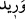

Müfredat’ta şöyle denilir:
karaciğere ve kalbe bitişik olan bir damardır. Bu
damarda ruhun mecraları vardır. Bu durumda âyet-i kerimede “Biz insana ruhundan
daha yakınız” denilmiş olmaktadır.
Mâverdî der ki: Hablü’l-verîd gönüle bağlı bir damardır. Allah Teâlâ’nın kulu
hakkındaki bilgisi kulun kendi kalbine olan bilgisinden daha yakındır/fazladır.
et-Tevilâtü’n-Necmiyye isimli eserde şöyle denilir: Âyetteki “hablü’l-vrîd” ifadesi
kişinin nefsine en yakın parçasını ifade eder. Allah Teâlâ bu ifadeyle kuluna, kulun
nefsinin kendisine olan yakınlığından daha yakın olduğunu işâret buyurmaktadır. Kul,
istediği her vakit nefsini bulur. Çünkü nefsi ona yakındır. İşte kul Rabbini dilediği,
aradığı ve talep ettiği her vakit Rabbini de bulur. Çünkü Rabbi de ona yakındır. Nitekim
âyet-i kerimede buyrulur: “Kullarım sana beni sorarlarsa (bilsinler ki) gerçekten
ben (onlara) çok yakınım.” (Bakara, 2/186) Zebur’da da şöyle buyrulmaktadır:
“Dikkat edin, beni arayan bulur.”
Allah; “şah damarından daha yakınız” diye buyurdu,
Oysa sen uzaklık fikir kuyusunu derin kazıyorsun.
Ey yayını ve okunu kurup hazırlayan,
Av yakınında oysa sen oku uzağa atıyorsun.
Şeyh Sâdi şöyle söyler:
Sevgili bana benden daha yakındır.
Fakat ne kadar tuhaf ki ben ondan uzağım.
Ne yapayım, kime söyleyebilirim ki,
O benim kucağımda olduğu halde ben ondan uzağım.
Büyüklerden biri der ki: Yakınlığın fazla olması, uzaklığın çok olması gibi bir
perdedir. Allah bize şah damarımızdan daha yakın ise o hâlde O’nunla bizim aramızdaki
yetmiş bin perde nerededir? Bu konunun iyice düşünülmesi gerekir.
Baklî şöyle söylemektedir: Bir kimse nefsini görecek olsa onun ne kadar aşağı
olduğunu görür. Dikkat edilmelidir ki Allah Teâlâ kula olan yakınlığının kemâli için
ittihâd (âdetâ bütünleşme) sıfatıyla “Biz, ona şah damarından daha yakınız.” buyruğuyla
haber vermektedir. Bu sebepledir ki Rasûlullah (s.a.) de “Nefsini bilen, Rabbini
bilir.”[235] buyurmuştur. Çünkü söylediklerimi anladıysa Allah’tan başka gerçek varlık
yoktur. Anlamadıysan şunu bil ki fiil sıfatla sıfat da zâtla kâimdir. “O, ancak O’dur”
mânâsını ifade eden aynü’l-cem‘ makamı işte budur. Sakın burada bir hulûl düşüncesine
kapılmayasın. Cenâb-ı Hakk, zâtı ve sıfatlarıyla sonradan yaratılmışlarda bir mahalli
olmasından münezzehtir. İşte bu âşıkların remzidir. Mecnûnun şu sözünü görmez misin?
Ben arzu edenim, arzu eden de benim